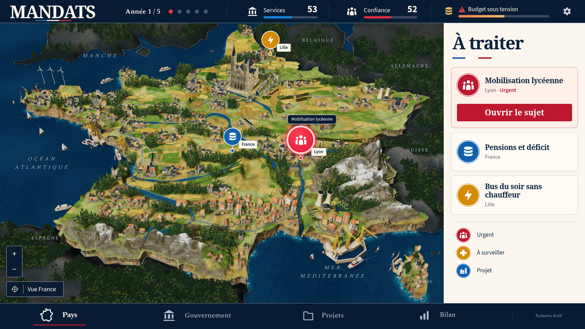
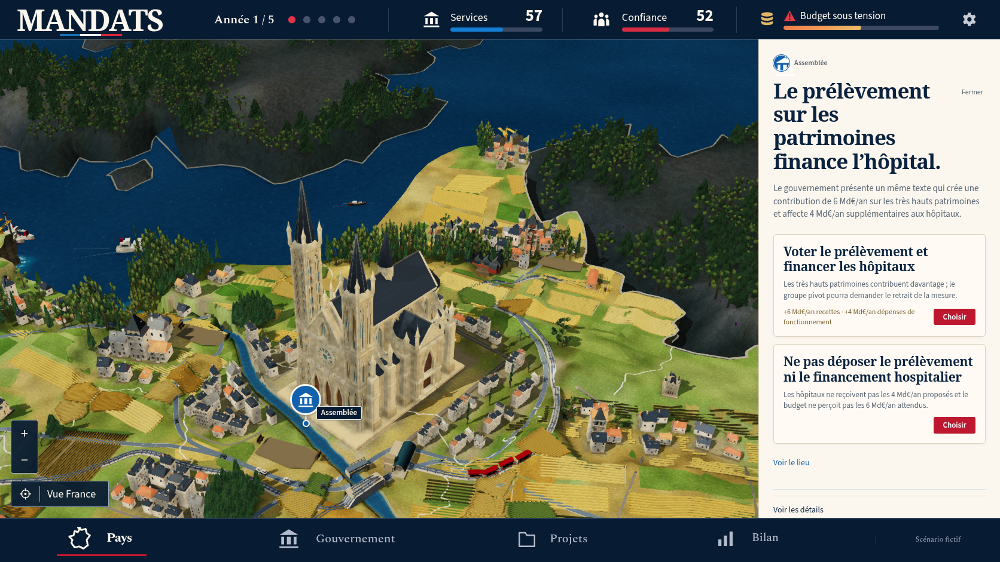
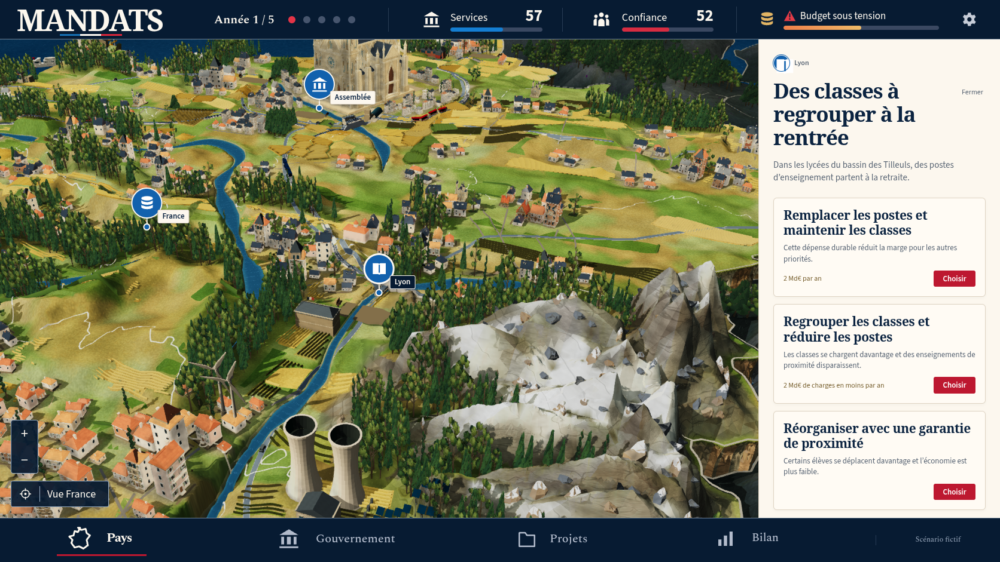
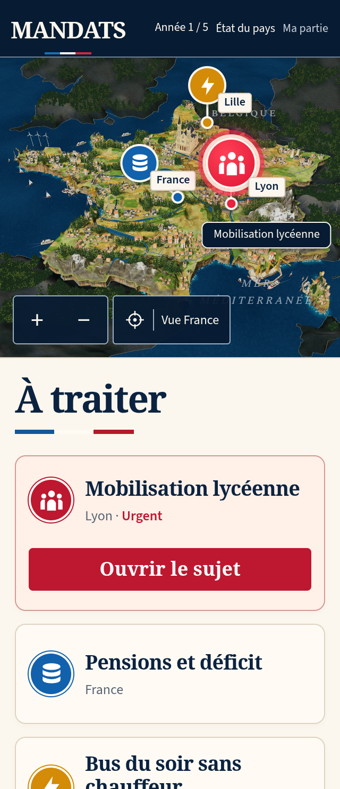

MANDATS : comparaison 46
Le diorama reste en dessous de la référence. La reconstruction continue. La PR 194 reste en brouillon ; les contrôles techniques ne constituent pas une validation artistique.
La vue comparée doit provenir d'une vraie décision scolaire dans la partie v12. Les chiffres et événements fictifs de la référence ne sont pas injectés dans le jeu.


Référence confirmée.Jeu réel, obtenu avec ses contrôles.
| Partie | Modification réelle | Différence encore visible |
|---|
| Alpes | Crêtes reliées sur le sol commun, bases plus larges, cirque nord moins haut et couloirs enneigés. Les anciennes surfaces contrôlées et celles des Pyrénées restent identiques. | Quelques grandes surfaces et crêtes restent trop simples. La finesse des faces et des matériaux demeure inférieure à la référence. |
| Falaises et embouchures | Entailles plus nombreuses sur les falaises sèches. Les contours de contact restent inchangés. Les quatre embouchures marines peuvent s'élargir plus rapidement après leurs dernières réserves bâties. | Le socle reste régulier par endroits et la sortie méditerranéenne ressemble encore à un canyon. |
| Corse | Relief central plus bas, une petite église sur sa propre terrasse et une adresse supplémentaire aux proportions d'origine. Les parcelles refusées ont été retirées. La canopée de l'église est protégée. | Le village et la silhouette de l'île restent moins riches que dans la maquette. |
| Bois et arrière-plan | Creux des reliefs extérieurs accentués et variation minérale plus présente. Les gardes de monuments utilisent les dimensions réellement chargées. | Les couronnes françaises sont trop étroites, les bourgs et l'arrière-plan demandent encore une composition et des matériaux plus fins. |

Cathédrale conservée avec ses vraies ouvertures et textures.
Lyon puis un clic sur Réduire la carte.
320 × 740, DPR 2, vraie décision scolaire.390 × 844, DPR 2, vraie décision scolaire.Preuves et limites
Dix captures natives du build complet contrôlent zéro erreur de page, de console, de requête et HTTP. Les empreintes des réponses JS/CSS réellement servies correspondent aux fichiers figés. La mobilisation provient d’un vrai choix scolaire sauvegardé : année 1, services 53, confiance 52. Les deux formats mobiles conservent leurs framebuffers 640 × 562 et 780 × 642 sans débordement horizontal. Aucun état, caméra par API, modèle ou LOD n’est forcé.
Le check complet passe 1 082 vérifications, trois cibles TypeScript, le build, le pré-rendu et les 150 ressources hors connexion. La suite 3D originale complète passe 23 cas actifs avec ses neuf omissions configurées en 18,4 minutes ; la suite sociale complète passe 13 cas actifs avec ses trois omissions configurées en 11,4 minutes. Aucun échec ni test instable n’est enregistré. Les contrôles originaux ciblés de DPR et de nouvelles parties WebKit en portrait et en paysage passent avec leurs limites existantes. Aucun test, délai, retry, worker ou omission n’a été modifié.
Deux fabrications reproduisent exactement le terrain et son manifeste : 17 maillages, 292 817 triangles, 337 174 sommets, 10 029 351 octets compressés. Les modèles GLB, le cube d'éclairage et les textures distribuées sont conservés depuis la passe 45.
Les observations natives des versions avant et après optimisation conservent exactement les placements relevés de 781 maisons, 16 monuments, 2 563 arbres français et 188 rochers. Les canopées ne recouvrent aucune boîte horizontale de monument. Les coins et sondes intérieures des 188 bases restent soutenus après les fractures, avec un dégagement maximal de −0,00372512. Ces relevés concernent les scènes observées et ne certifient pas toutes les collisions, la fluidité matérielle ou la conformité artistique.
Le contrôle des sources conserve les hauteurs, bandes, pentes et normales sur 118 872 sondes historiques et pyrénéennes. Les limites planifiées des embouchures n'ajoutent aucun recouvrement aux cas conservateurs déjà relevés avant cette modification ; ce résultat ne constitue pas une absence générale de collisions. La CI du commit précédent 233db7d reste distincte des résultats locaux de cette passe.
Manifeste · Captures natives · Build · Appuis des rochers · Monuments et canopées · CI précédente · Placements conservés